Poster frame candidates
Proposal only: the highlighted frame scores best on detail and mid brightness. Choose by eye; the owner decides.
botanic-natural-latex-mattress-premium-presentation-loop
h264 910×512, 12.0 s, 313 kbit/s, 0.45 MB, faststart: true
35 % · detail 21.4 · light 7850 % · detail 22.6 · light 7090 % · detail 22.6 · light 645 % · detail 17.1 · light 9015 % · detail 16.2 · light 8325 % · detail 16.3 · light 8080 % · detail 16.6 · light 6365 % · detail 16.1 · light 63
botanic-natural-latex-mattress-premium-presentation-full
h264 910×512, 62.3 s, 442 kbit/s, 3.29 MB, faststart: true
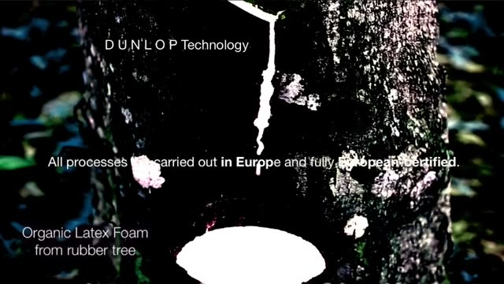
5 % · detail 65.8 · light 4290 % · detail 33.9 · light 162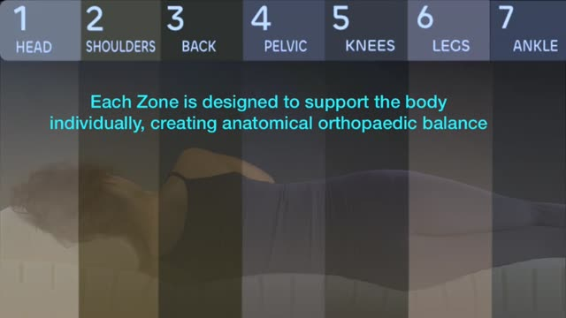
50 % · detail 24.4 · light 76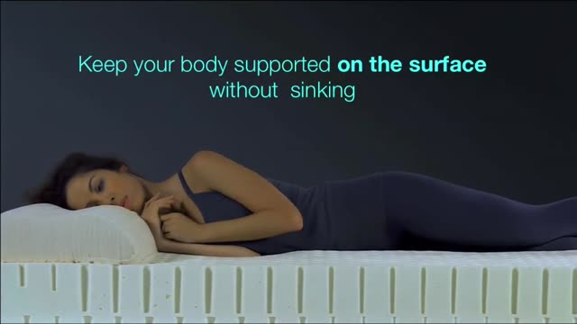
65 % · detail 23.7 · light 7335 % · detail 23.9 · light 59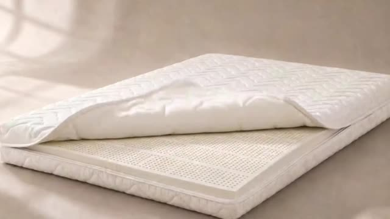
80 % · detail 24.1 · light 18415 % · detail 16.6 · light 8625 % · detail 18.1 · light 63natural-latex-milk-to-foam-origin
h264 910×512, 21.5 s, 680 kbit/s, 1.74 MB, faststart: true
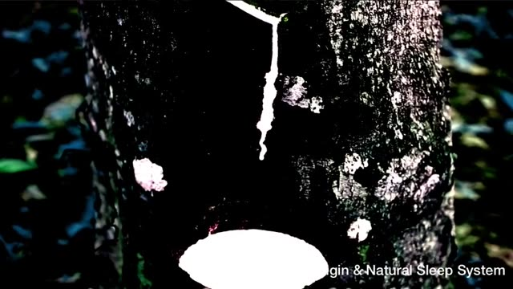
25 % · detail 58.6 · light 39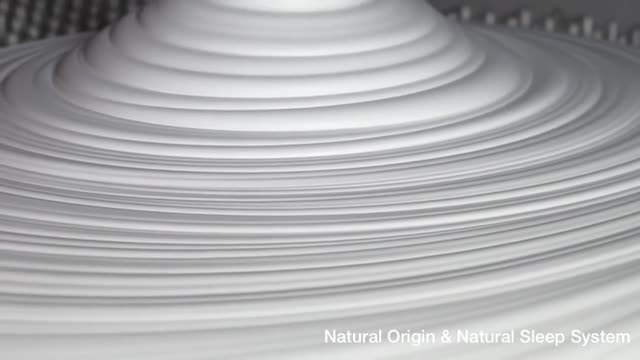
50 % · detail 51.5 · light 174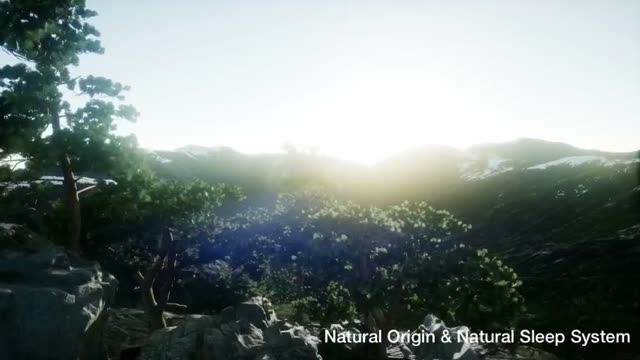
5 % · detail 35.2 · light 12980 % · detail 19.1 · light 14165 % · detail 5.1 · light 2990 % · detail 4.3 · light 11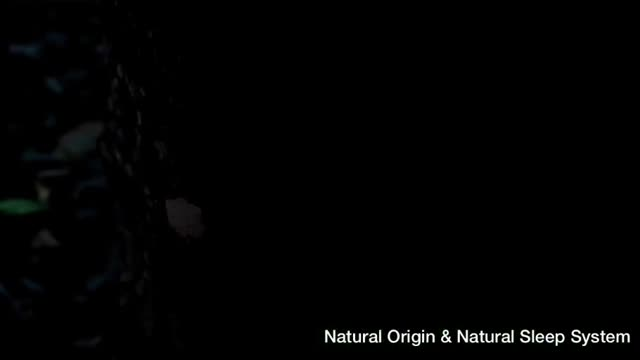
15 % · detail 5.5 · light 2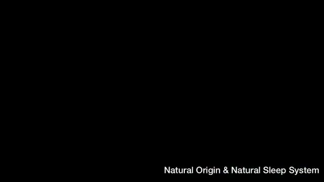
35 % · detail 3.9 · light 2natural-latex-elasticity-adjustable-bed
h264 910×418, 12.0 s, 250 kbit/s, 0.36 MB, faststart: true
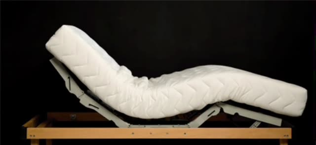
65 % · detail 23.9 · light 65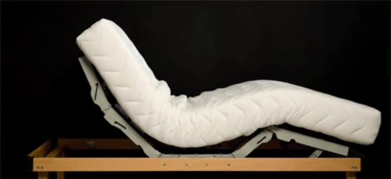
50 % · detail 24.0 · light 64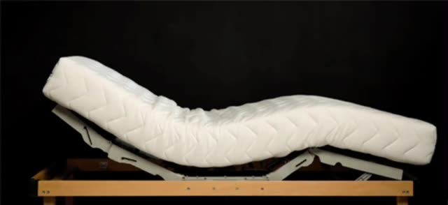
35 % · detail 23.7 · light 66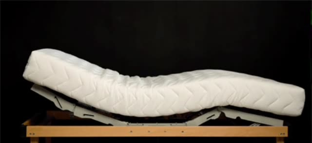
80 % · detail 23.6 · light 67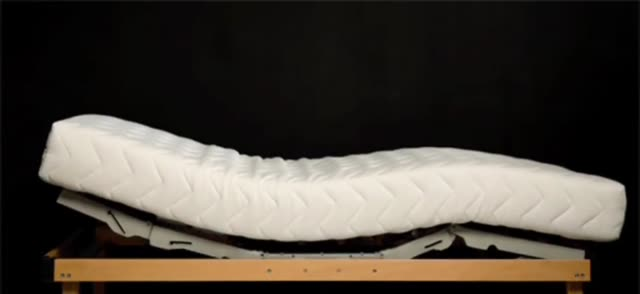
25 % · detail 22.8 · light 67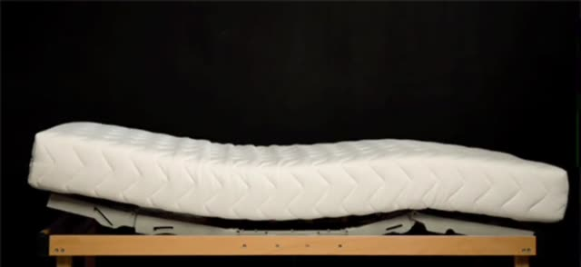
90 % · detail 22.0 · light 67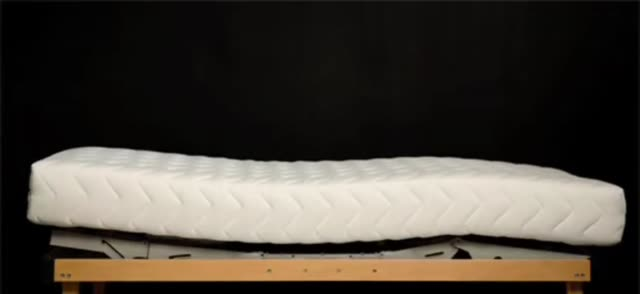
15 % · detail 20.5 · light 67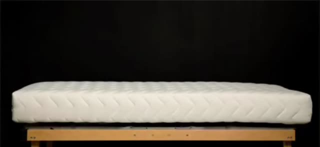
5 % · detail 18.6 · light 65natural-latex-7-zone-spinal-alignment
h264 910×512, 51.8 s, 261 kbit/s, 1.61 MB, faststart: true
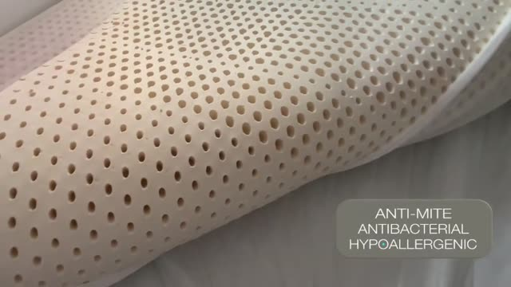
15 % · detail 41.8 · light 137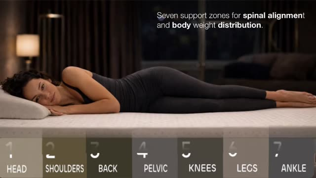
50 % · detail 34.3 · light 67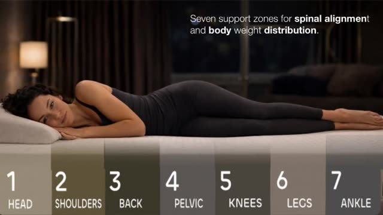
35 % · detail 34.4 · light 63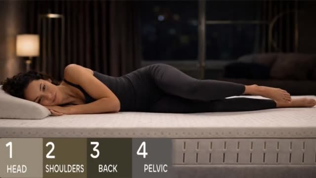
25 % · detail 31.2 · light 6780 % · detail 28.2 · light 8190 % · detail 22.9 · light 815 % · detail 30.4 · light 23365 % · detail 0.0 · light 1natural-latex-airflow-ventilation-channels
h264 910×512, 12.4 s, 575 kbit/s, 0.85 MB, faststart: true
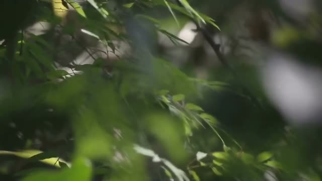
90 % · detail 21.6 · light 71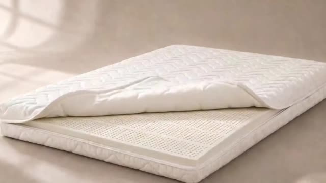
65 % · detail 24.6 · light 185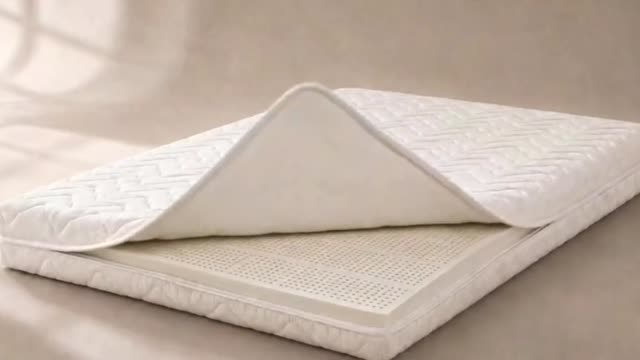
50 % · detail 21.5 · light 181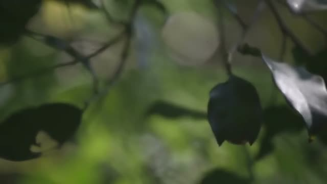
80 % · detail 12.4 · light 73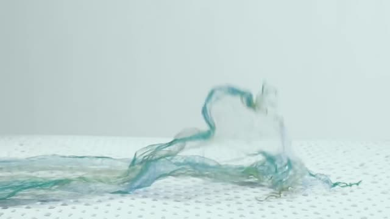
35 % · detail 14.5 · light 209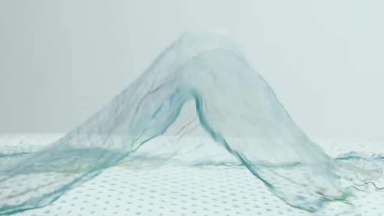
15 % · detail 14.2 · light 208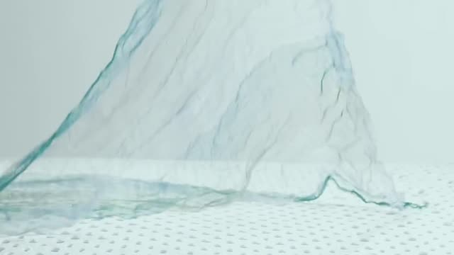
25 % · detail 13.8 · light 2105 % · detail 9.9 · light 211natural-latex-durability-pressure-test
h264 910×512, 15.7 s, 909 kbit/s, 1.70 MB, faststart: true
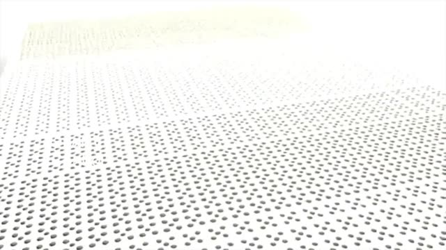
80 % · detail 67.0 · light 241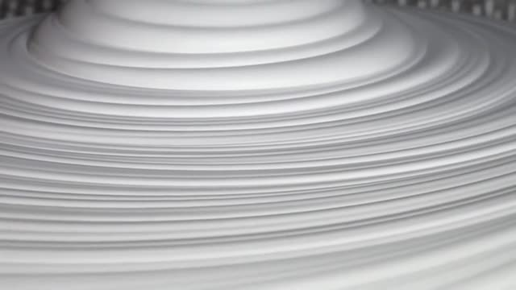
25 % · detail 50.1 · light 179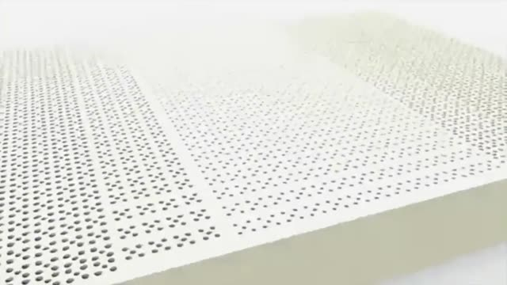
90 % · detail 49.9 · light 226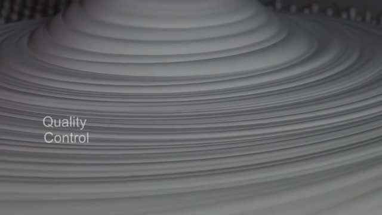
35 % · detail 29.9 · light 102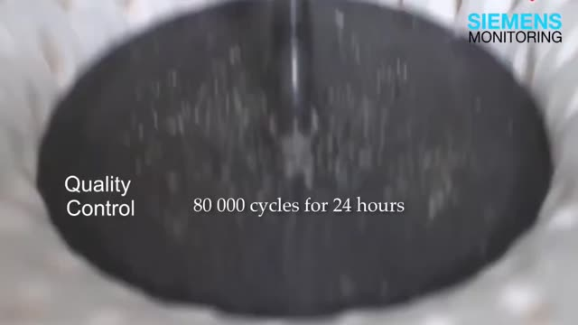
50 % · detail 19.9 · light 100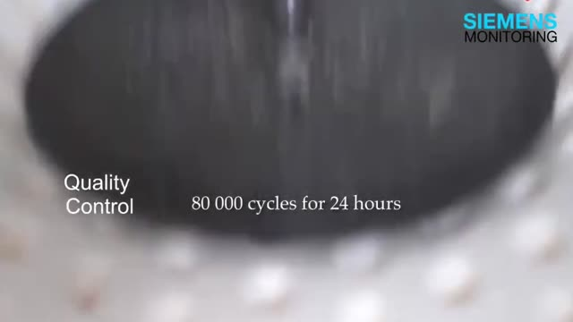
65 % · detail 15.9 · light 117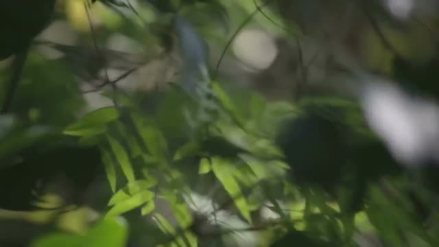
5 % · detail 19.0 · light 72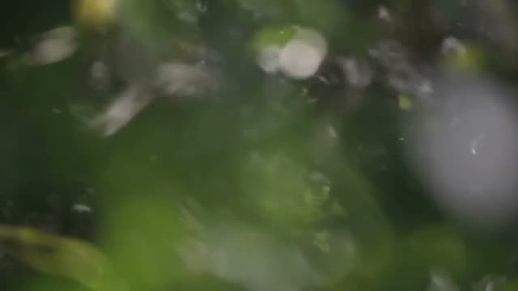
15 % · detail 8.5 · light 73